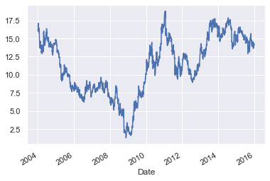

Resampling, Shifting, and Windowing¶
Ref: VanderPlas, Jacob T - Python data science handbook_ essential tools for working with data-O’Reilly Media (2017)
pip install pandas-datareader
Collecting pandas-datareader
Downloading pandas_datareader-0.10.0-py3-none-any.whl (109 kB)
?25l ━━━━━━━━━━━━━━━━━━━━━━━━━━━━━━━━━━━━━━━━ 0.0/109.5 KB ? eta -:--:--
━━━━━━━━━━━━━━━━━━━━━━━━━━━━━━━━━━━━━━━ 109.5/109.5 KB 3.0 MB/s eta 0:00:00
?25h
Requirement already satisfied: pandas>=0.23 in /Library/Frameworks/Python.framework/Versions/3.7/lib/python3.7/site-packages (from pandas-datareader) (1.3.5)
Collecting lxml
Downloading lxml-4.9.1-cp37-cp37m-macosx_10_15_x86_64.whl (4.5 MB)
?25l ━━━━━━━━━━━━━━━━━━━━━━━━━━━━━━━━━━━━━━━━ 0.0/4.5 MB ? eta -:--:--
━╸━━━━━━━━━━━━━━━━━━━━━━━━━━━━━━━━━━━━━━ 0.2/4.5 MB 4.5 MB/s eta 0:00:01
━━━╸━━━━━━━━━━━━━━━━━━━━━━━━━━━━━━━━━━━━ 0.4/4.5 MB 5.0 MB/s eta 0:00:01
━━━━━╸━━━━━━━━━━━━━━━━━━━━━━━━━━━━━━━━━━ 0.6/4.5 MB 5.4 MB/s eta 0:00:01
━━━━━━━╸━━━━━━━━━━━━━━━━━━━━━━━━━━━━━━━━ 0.9/4.5 MB 5.9 MB/s eta 0:00:01
━━━━━━━━━╸━━━━━━━━━━━━━━━━━━━━━━━━━━━━━━ 1.1/4.5 MB 5.5 MB/s eta 0:00:01
━━━━━━━━━━━━╺━━━━━━━━━━━━━━━━━━━━━━━━━━━ 1.4/4.5 MB 5.7 MB/s eta 0:00:01
━━━━━━━━━━━━━━╸━━━━━━━━━━━━━━━━━━━━━━━━━ 1.7/4.5 MB 6.0 MB/s eta 0:00:01
━━━━━━━━━━━━━━━━━━╺━━━━━━━━━━━━━━━━━━━━━ 2.1/4.5 MB 6.6 MB/s eta 0:00:01
━━━━━━━━━━━━━━━━━━━╸━━━━━━━━━━━━━━━━━━━━ 2.2/4.5 MB 6.3 MB/s eta 0:00:01
━━━━━━━━━━━━━━━━━━━━━━╺━━━━━━━━━━━━━━━━━ 2.5/4.5 MB 6.2 MB/s eta 0:00:01
━━━━━━━━━━━━━━━━━━━━━━━━━╺━━━━━━━━━━━━━━ 2.8/4.5 MB 6.4 MB/s eta 0:00:01
━━━━━━━━━━━━━━━━━━━━━━━━━━━━╺━━━━━━━━━━━ 3.2/4.5 MB 6.5 MB/s eta 0:00:01
━━━━━━━━━━━━━━━━━━━━━━━━━━━━━━━━╸━━━━━━━ 3.7/4.5 MB 7.0 MB/s eta 0:00:01
━━━━━━━━━━━━━━━━━━━━━━━━━━━━━━━━━━━━╸━━━ 4.1/4.5 MB 7.3 MB/s eta 0:00:01
━━━━━━━━━━━━━━━━━━━━━━━━━━━━━━━━━━━━━╸━━ 4.2/4.5 MB 7.4 MB/s eta 0:00:01
━━━━━━━━━━━━━━━━━━━━━━━━━━━━━━━━━━━━━━╸━ 4.4/4.5 MB 6.8 MB/s eta 0:00:01
━━━━━━━━━━━━━━━━━━━━━━━━━━━━━━━━━━━━━━━╸ 4.5/4.5 MB 6.8 MB/s eta 0:00:01
━━━━━━━━━━━━━━━━━━━━━━━━━━━━━━━━━━━━━━━━ 4.5/4.5 MB 6.2 MB/s eta 0:00:00
?25h
Requirement already satisfied: requests>=2.19.0 in /Library/Frameworks/Python.framework/Versions/3.7/lib/python3.7/site-packages (from pandas-datareader) (2.24.0)
Requirement already satisfied: numpy>=1.17.3 in /Library/Frameworks/Python.framework/Versions/3.7/lib/python3.7/site-packages (from pandas>=0.23->pandas-datareader) (1.19.1)
Requirement already satisfied: python-dateutil>=2.7.3 in /Library/Frameworks/Python.framework/Versions/3.7/lib/python3.7/site-packages (from pandas>=0.23->pandas-datareader) (2.8.1)
Requirement already satisfied: pytz>=2017.3 in /Library/Frameworks/Python.framework/Versions/3.7/lib/python3.7/site-packages (from pandas>=0.23->pandas-datareader) (2020.1)
Requirement already satisfied: idna<3,>=2.5 in /Library/Frameworks/Python.framework/Versions/3.7/lib/python3.7/site-packages (from requests>=2.19.0->pandas-datareader) (2.10)
Requirement already satisfied: urllib3!=1.25.0,!=1.25.1,<1.26,>=1.21.1 in /Library/Frameworks/Python.framework/Versions/3.7/lib/python3.7/site-packages (from requests>=2.19.0->pandas-datareader) (1.25.10)
Requirement already satisfied: certifi>=2017.4.17 in /Library/Frameworks/Python.framework/Versions/3.7/lib/python3.7/site-packages (from requests>=2.19.0->pandas-datareader) (2020.6.20)
Requirement already satisfied: chardet<4,>=3.0.2 in /Library/Frameworks/Python.framework/Versions/3.7/lib/python3.7/site-packages (from requests>=2.19.0->pandas-datareader) (3.0.4)
Requirement already satisfied: six>=1.5 in /Library/Frameworks/Python.framework/Versions/3.7/lib/python3.7/site-packages (from python-dateutil>=2.7.3->pandas>=0.23->pandas-datareader) (1.15.0)
Installing collected packages: lxml, pandas-datareader
Successfully installed lxml-4.9.1 pandas-datareader-0.10.0
WARNING: You are using pip version 22.0.4; however, version 22.1.2 is available.
You should consider upgrading via the '/Library/Frameworks/Python.framework/Versions/3.7/bin/python3.7 -m pip install --upgrade pip' command.
Note: you may need to restart the kernel to use updated packages.
from pandas_datareader import data
# https://github.com/jakevdp/PythonDataScienceHandbook/issues/94
import pandas_datareader.data as web
from datetime import datetime
goog = data.DataReader('F', start='2004', end='2016',data_source='yahoo')
goog.head()
| High | Low | Open | Close | Volume | Adj Close | |
|---|---|---|---|---|---|---|
| Date | ||||||
| 2003-12-31 | 16.059999 | 15.890000 | 15.990000 | 16.000000 | 7702900.0 | 9.653556 |
| 2004-01-02 | 16.150000 | 16.030001 | 16.100000 | 16.080000 | 9030400.0 | 9.701822 |
| 2004-01-05 | 16.650000 | 16.330000 | 16.370001 | 16.590000 | 20069800.0 | 10.009532 |
| 2004-01-06 | 16.730000 | 16.389999 | 16.719999 | 16.540001 | 16760800.0 | 9.979365 |
| 2004-01-07 | 17.020000 | 16.450001 | 16.580000 | 16.990000 | 13801900.0 | 10.250871 |
goog = goog['Close']
goog
Date
2003-12-31 16.000000
2004-01-02 16.080000
2004-01-05 16.590000
2004-01-06 16.540001
2004-01-07 16.990000
...
2015-12-24 14.310000
2015-12-28 14.180000
2015-12-29 14.230000
2015-12-30 14.170000
2015-12-31 14.090000
Name: Close, Length: 3022, dtype: float64
%matplotlib inline
import matplotlib.pyplot as plt
import seaborn; seaborn.set()
---------------------------------------------------------------------------
ModuleNotFoundError Traceback (most recent call last)
/var/folders/kl/h_r05n_j76n32kt0dwy7kynw0000gn/T/ipykernel_5750/1277940024.py in <module>
1 get_ipython().run_line_magic('matplotlib', 'inline')
2 import matplotlib.pyplot as plt
----> 3 import seaborn; seaborn.set()
ModuleNotFoundError: No module named 'seaborn'
goog.plot();

print(goog.head(5))
print(goog.shift(1).fillna(0).head(3))
Date
2003-12-31 16.000000
2004-01-02 16.080000
2004-01-05 16.590000
2004-01-06 16.540001
2004-01-07 16.990000
Name: Close, dtype: float64
Date
2003-12-31 0.00
2004-01-02 16.00
2004-01-05 16.08
Name: Close, dtype: float64
rolling = goog.rolling(5, center=True)
rolling.mean().head()
Date
2003-12-31 NaN
2004-01-02 NaN
2004-01-05 16.440
2004-01-06 16.660
2004-01-07 16.756
Name: Close, dtype: float64
for i in range(5):
print(i)
0
1
2
3
4